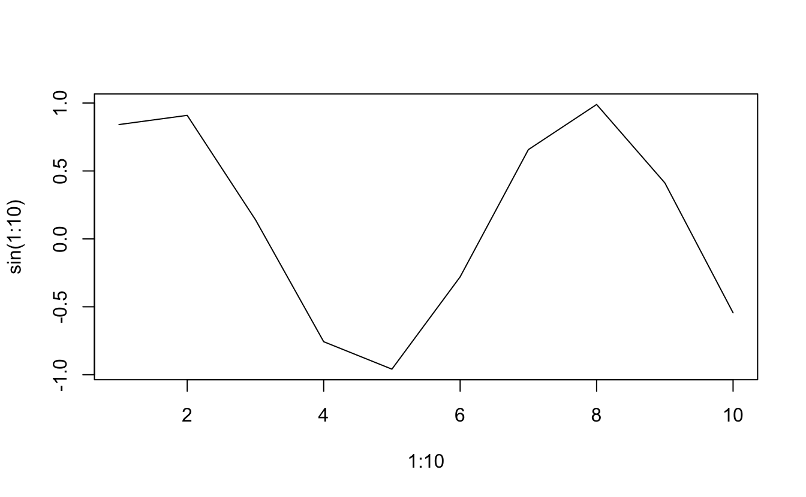
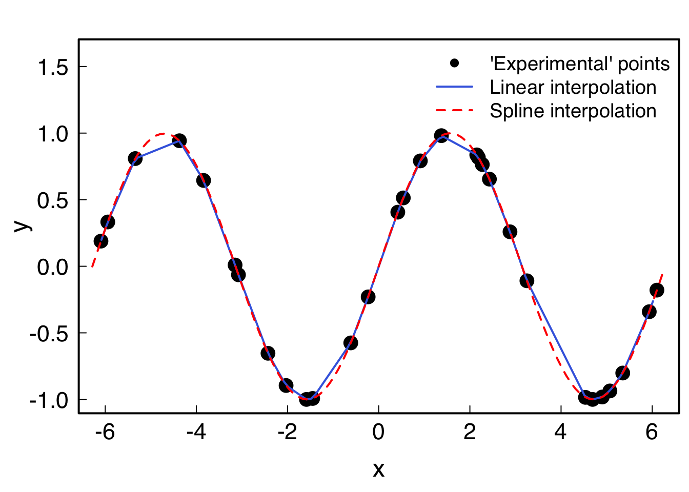

geom_mean <- function(x, y){
a <- sqrt(x*y)
}
geom_mean(1,2)9 Functions
9.1 Definition
To get the manual on a base function, type ?function_name.
A function returns the last thing that is called in it. Thus a function defined like that will return nothing:
While this will return what you want:
geom_mean <- function(x, y){
a <- sqrt(x*y)
a
}
geom_mean(1,2) #returns a[1] 1.414214The result of a function can be a list, a data.frame, a vector… or nothing. And you can attribute the result of a function to a variable:
$name
[1] "Joe"
$age
[1] 33One can add default values to variables:
testfunc <- function(x, y=1){
x*y
}
testfunc(1)[1] 1testfunc(1, y=2)[1] 2testfunc(1:3, y=.1)[1] 0.1 0.2 0.3And pass arguments to other functions:
testfunc2 <- function(x, ...){
head(x, ...)
}
testfunc2(1:100)[1] 1 2 3 4 5 6testfunc2(1:100,2)[1] 1 2Or even pass a function as argument:
testfunc3 <- function(FUN, ...){
FUN(...)
}
testfunc3(sum, 1:10)[1] 55testfunc3(plot, 1:10, sin(1:10), type="l")
9.2 Interpolation of data
It is possible to interpolate data through the approxfun() and splinefun() functions: while the former uses linear interpolation, the latter uses cubic splines (polynomials).
xmin <- -2*pi; xmax <- 2*pi
x <- runif(30, min=xmin, max=xmax)
xx <- seq(xmin, xmax, .1)
y <- sin(x)
# Linear interpolation
lin_interp <- approxfun(x,y) #is a function
lin_interp(0); lin_interp(pi)[1] 0.006668545[1] -0.000115595yy_lin <- approx(x, y, xout=xx) #is a list containing x and y
# Cubic spline interpolation
spl_interp <- splinefun(x,y) #is a function
yy_spl <- spline(x, y, xout=xx) #is a list containing x and y
par(family = "Helvetica", cex.lab=1.5, cex.axis=1.4,
mgp = c(2.4, .5, 0), tck=0.02, mar=c(4, 4, 2, .5), lwd=2, las=1)
plot(x, y, pch=16, cex=2, ylim=c(-1,1.6))
lines(xx, lin_interp(xx), col="royalblue") # equivalent to: lines(yy_lin, col="royalblue")
lines(xx, spl_interp(xx), col="red", lty=2)# equivalent to: lines(yy_spl, col="red")
legend("topright",
cex=1.2,
lty=c(NA, 1, 2),
lwd=c(NA, 2, 2),
pch=c(16, NA, NA),
col=c("black", "royalblue", "red"),
bty = "n",
legend=c("'Experimental' points", "Linear interpolation", "Spline interpolation")
)
9.3 Exercises
Download the archive with all the exercises files, unzip it in your R class RStudio project, and edit the R files.